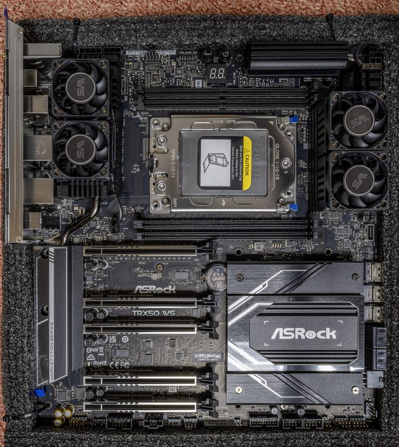
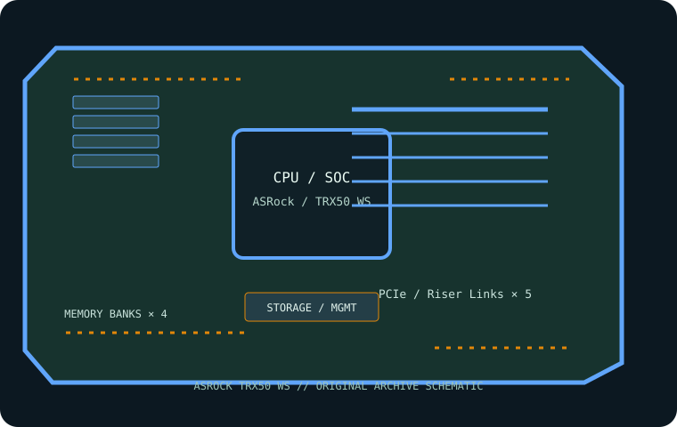

[ INDIVIDUAL COMPONENT // MOTHERBOARDS ]
ASRock TRX50 WS
E-ATX sTR5 workstation board for supported AMD Ryzen Threadripper and Threadripper PRO processors. This page records the exact printed model and revision policy with manufacturer references.


MODEL / REVISION: The model is sold without a distinct revision suffix in its product designation; inspect the PCB for the physical revision and select the matching ASRock downloads.
Specifications
| Exact model / revision | ASRock TRX50 WS — The model is sold without a distinct revision suffix in its product designation; inspect the PCB for the physical revision and select the matching ASRock downloads. |
|---|---|
| CPU and socket | One AMD sTR5 socket; support for Threadripper 7000 and Threadripper PRO 7000 WX families subject to CPU list and BIOS. |
| Chipset / platform | AMD TRX50. |
| Board size | E-ATX, approximately 305 × 267 mm (12 × 10.5 in); check chassis tray and standoff alignment. |
| Memory / ECC / registered | Four DDR5 ECC Registered DIMM sockets in four-channel mode; RDIMM / RDIMM-3DS only, not UDIMM. Validate speed, rank and capacity against CPU and QVL. |
| PCIe / lanes | Three PCIe 5.0 x16-length slots and two PCIe 4.0 x16-length slots; actual electrical lanes depend on CPU and population, including reduced wiring on some slots. |
| Storage | One PCIe 5.0 x4 M.2 and one PCIe 4.0 x4 M.2, one PCIe 5.0 x4 MCIO, two SlimSAS connectors with PCIe/SATA modes, plus four SATA 6 Gb/s ports. Consult the manual for port conversion and sharing. |
| Networking / BMC | Marvell 10GbE and Realtek 2.5GbE LAN; Wi-Fi 6E/Bluetooth module and antenna. No integrated BMC/IPMI controller. |
| Firmware / compatibility | Check ASRock CPU support and BIOS list before fitting 7000-family processors; use only the matching TRX50 WS image. Populate RDIMMs in the four-channel order in the manual. No onboard BMC; OS-based network access is not out-of-band management. |
Compatibility and revision notes
Check ASRock CPU support and BIOS list before fitting 7000-family processors; use only the matching TRX50 WS image. Populate RDIMMs in the four-channel order in the manual. No onboard BMC; OS-based network access is not out-of-band management.
Before installation, verify the physical revision and assembly label, CPU support list and minimum BIOS; confirm the exact memory type (UDIMM versus registered DIMM), channel population, chassis form factor, PCIe lane routing and storage connector modes against the linked vendor manual. A mechanically compatible socket does not guarantee CPU, firmware, ECC or lane compatibility.
Preservation and service
Record BIOS and BMC versions, serial and MAC labels, installed processors and DIMM part numbers, risers/cables, and test conditions. Use ESD-safe handling, correct socket procedure and chassis airflow. Do not cross-flash firmware from a similarly named board or revision.
Sources & further reading
- ASRock — TRX50 WS specificationsManufacturer reference for the exact board model; use its support/QVL/manual details to verify population and compatibility.
- ASRock — TRX50 WS user manualManufacturer reference for the exact board model; use its support/QVL/manual details to verify population and compatibility.
Manufacturer model-specific references take precedence. Recheck CPU support, QVL, lane tables and current firmware for the printed board revision before service.